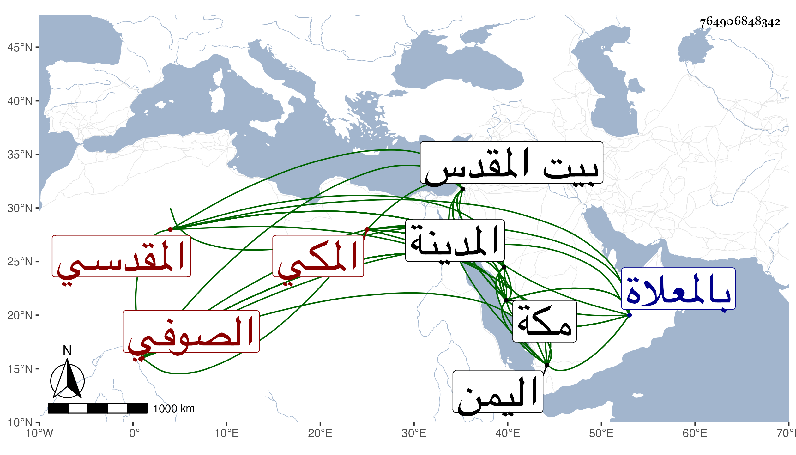

0902Sakhawi.DawLamic.ITO20230111-ara1.EIS1600.764906848342
Biography ID: 764906848342
958
إسماعيل بن محمد المقدسي ثم المكي الصوفي . صحب بالقدس الشيخ محمد القرمي سنين وكذا صحب غيره ، وقدم مكة في موسم سنة خمس وثمانمائة فأقام بها ثم توجه بعد الحج من السنة التي تليها إلى المدينة فجاور بها ثم عاد إلى مكة وتوجه منها إلى اليمن في أول سنة تسع ثم قدم في أثناء التي تليها ولم يلبث أن مات في يوم السبت منتصف ذي الحجة منها ودفن بالمعلاة وقد بلغ الستين أوجازها ظنا ، وكان يسكن في مكة بمعبد الجنيد وعمر فيه أماكن وتأهل بمكة بابنة الشيخ أبي العباس بن عبد المعطي النحوي ورزق منها ابنه وله نظم كتب منه بعضهم :
| خذوني مني وأفردوني وغيبوا | وجودي عني في صفاتكم الحسنى |
| فنائي بقائي فيكم ولديكم | حياتي مماتي واللقا عيشي الأهنى |
في أبيات ، ذكره الفاسي في مكة واسم جده ميكائيل .
